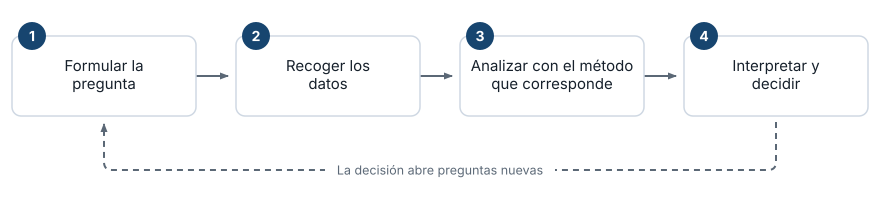
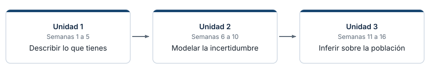
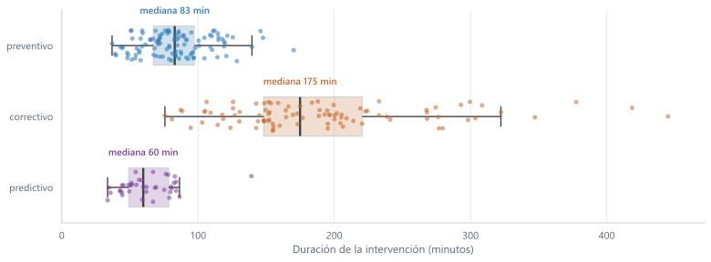
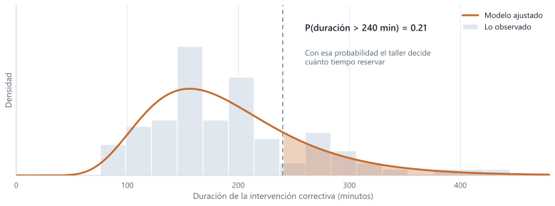
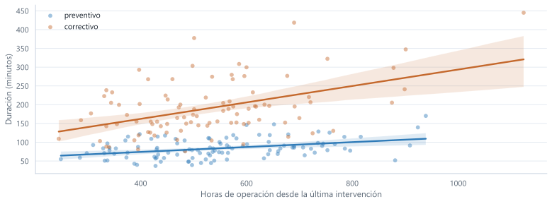
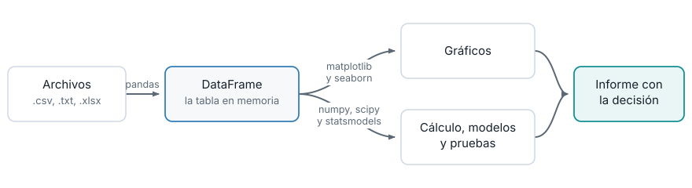
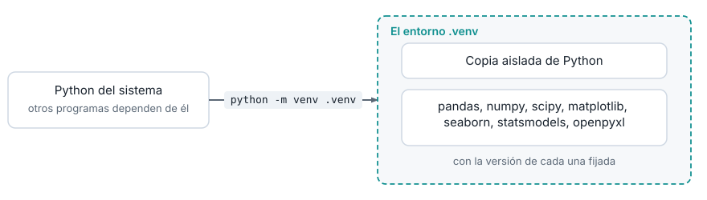
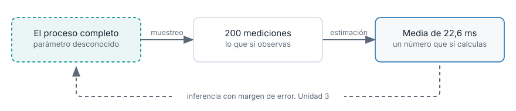
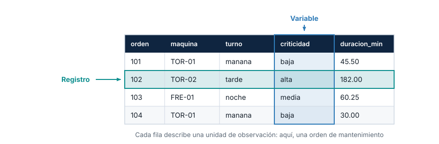

Presentación del módulo y entorno de trabajo
Institución Universitaria Pascual Bravo
Primera parte
Segunda parte

Los cuatro pesan igual sobre el resultado.
Un análisis impecable montado sobre datos mal recogidos produce una decisión equivocada con apariencia de rigor.
Y esa decisión hay que defenderla después ante quien la firma.
Un taller registra cada intervención sobre sus tornos y fresadoras: qué máquina, en qué turno, de qué tipo y cuántos minutos tomó. La pregunta del área es cuánto tiempo reservar para una intervención y de qué depende.
Tres decisiones tomadas antes de medir deciden si el análisis sirve:
Cambia una de esas decisiones y cambia la conclusión.

Unidad 1
Qué hay en estos datos
Informe exploratorio con gráficos y resúmenes numéricos.
Cierre 30%
Unidad 2
Qué tan probable es lo que observo
Un modelo de probabilidad ajustado al fenómeno.
Cierre 30%
Unidad 3
Qué puedo afirmar sobre lo que no medí
Conclusiones sobre la población, con su margen de error declarado.
Cierre 40%

Tablas de frecuencia, histogramas, medidas de localización y dispersión, boxplot. El producto es un informe exploratorio del caso. Datos simulados de 240 intervenciones.

Se ajusta una distribución a lo observado y con ella se calculan probabilidades de eventos que todavía no ocurrieron. El producto es un modelo que responde preguntas.

Intervalos de confianza, pruebas de hipótesis, comparación de tratamientos y regresión. El producto son conclusiones sobre el proceso, con su margen de error declarado.
Cada tema entra por el concepto y sale por el computador:
Así la distribución de una media deja de ser una fórmula y pasa a ser algo que mediste.

pandas Carga los datos y los deja como tabla con columnas con nombre
numpy Cálculo numérico y números aleatorios para simular
openpyxl Deja que pandas lea y escriba archivos de Excel
matplotlib Motor de los gráficos
seaborn Gráficos estadísticos con menos código
scipy Distribuciones de probabilidad y pruebas de hipótesis
statsmodels Regresión y ANOVA con la salida que se reporta

Cada quien trabaja en un entorno aislado con las mismas versiones. Así el mismo script produce el mismo resultado en tu máquina, en la mía y en la de quien revise tu informe dentro de un año.
Actívalo según tu sistema:
Si la terminal no muestra (.venv), el entorno no está activo.
Crea requirements.txt:
Fijar las versiones con == es lo que hace reproducible el análisis.
Cerrar la terminal desactiva el entorno. Hay que activarlo otra vez en cada sesión de trabajo.
import time
import random
import pandas as pd
random.seed(2026)
filas = []
for i in range(1, 201):
datos = [random.random() for _ in range(100_000)]
inicio = time.perf_counter()
datos.sort()
fin = time.perf_counter()
filas.append({
"medicion": i,
"tiempo_ms": round((fin - inicio) * 1000, 3),
"tamano": 100_000,
})
mediciones = pd.DataFrame(filas)
mediciones.to_csv("tiempos_ordenamiento.csv", index=False)
print(mediciones.head())
print()
print(mediciones["tiempo_ms"].describe())random.seed(2026) fija la secuencia: la lista que se ordena es siempre la misma.La variabilidad no viene de los datos. Viene de la medición.

Un solo dato no es evidencia.
Si alguien reporta que una máquina se demoró 38 minutos en una intervención, no sabes todavía si es la máquina o es el ruido de una sola medición.
| Formato | Qué es | Cuándo lo vas a usar |
|---|---|---|
.csv |
Texto plano, valores separados por comas | El formato por omisión |
.txt |
Texto plano con tabulación | Lo que exportan muchos equipos de medición |
.xlsx |
Libro de Excel | Cuando el dato llega o se entrega en Excel |
Pandas lee y escribe los tres. Para .xlsx necesita openpyxl.

Variable. Una columna. Algo que se midió u observó de cada unidad.
Registro. Una fila completa: todos los valores medidos de una misma unidad.
Unidad de observación. Lo que representa cada fila. Aquí, una orden de mantenimiento.
La semana 2 clasifica las variables por su naturaleza y ahí queda acordado el caso sobre el que trabajan las tres unidades.
Toda la guía de la semana está publicada en el sitio del módulo.